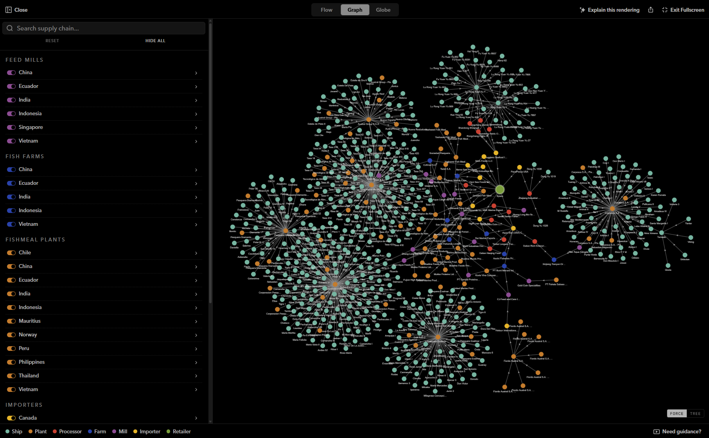

The Outlaw Ocean Project · In development
One of the largest seafood supply chain accountability databases in development — linking fishing vessels, labor records, and catch data to trace accountability from ocean to consumer.
Role
Lead data scientist and data engineer
Organization
The Outlaw Ocean Project
Status
Pending publication, fall 2026
The problem
A can of pet food or a fillet at the supermarket carries no memory of the boat it came from. Between the vessel and the plate sit reefers that meet fishing boats far offshore, fishmeal plants that blend catch from dozens of sources, feed mills, farms, processors, importers, and brands — each a handoff where provenance is lost. That opacity is not an accident. It is what lets forced labor, illegal fishing, and environmental harm survive contact with a global market that would otherwise reject them.
Bait to Plate is built to close that gap for one of the hardest-to-trace commodities in the food system: the fishmeal and fish oil (FMFO) that feeds farmed seafood. The database reconstructs the chain link by link — vessel to reefer, reefer to plant, plant to feed mill, feed mill to farm, farm to the brands on a shelf — so that a documented abuse at sea can be followed forward to the companies that ultimately profit from it.
Scale
852,000+
Vessels in the reference fleet
5,500+
Companies, plants & farms profiled
7,600
Supply-chain links mapped
200+
Flag states & jurisdictions
Core supply-chain actors: 1,430 fishmeal plants, 1,019 registered ship owners, 860 importers, 710 retailers, 500 ship operators, 484 brands, 156 fish farms, 145 feed mills, 101 parent companies, 78 processors, 12 reefers. Of the vessel reference layer, 64,368 carry an IMO number.
Method
01
Ingesting the raw record
Records arrive from trade data providers (Trade Atlas, Import Genius, Import Yeti, Panjiva), Global Fishing Watch vessel and encounter data, government and registry lists, certification bodies, corporate registries, and hundreds of news outlets and worker testimonies. Each feeds a dedicated pipeline that normalizes it into a shared shipment and entity model.
02
Deciding when two names are one company
The hard part. A single fishmeal plant appears as a dozen spellings across manifests, registries, and languages, and none of the sources share an identifier. Fuzzy matching, corporate-suffix normalization, and a deduplication pass collapse these into one canonical entity — with a human review gate before anything merges, because a wrong merge silently rewrites the supply chain.
03
What a claim must clear
Nothing enters as fact by default. Automated extractions land as “needs review,” each carrying its source and, where possible, an archived snapshot of the page it came from. Company sustainability claims are re-checked against the live web; a claim that can’t be verified on the page is rejected, not stored.
04
Walking a plate back to a crew
Every resolved link is written to a graph, so a single brand can be traversed backward through its importers, processors, farms, and feed mills to the plants and the vessels that supplied them — and forward from a documented abuse at sea to the products it ends up in.
“For the first time, an abuse documented on a boat far offshore doesn’t disappear at the dock — it can be followed all the way to the shelf.” Attribution TK

What it surfaces
The value isn’t any single record — it’s the connections. A worker’s account, a vessel’s transshipment history, and a shipment manifest that individually mean little become, once linked, a documented path from a specific harm to a specific company. Questions that used to take weeks of manual cross-referencing — who buys from this plant? which brands are downstream of this fleet? — become a single traversal.
The database is built to serve reporters chasing a story, editors checking what’s defensible, and — over time — the regulators, importers, and advocates who need to know who they’re actually buying from.
Stack
Directus (Postgres) is the source of truth; a supply-chain graph in Neo4j powers traversal and analysis. Dozens of background jobs — ingestion, entity dedup, classification, monitoring, archival — run on their own schedules under Prefect, with failures routed to the newsroom automatically. Language-model work (entity extraction, classification, claim verification) runs on a local vLLM TK — your paste cut off here; finish the sentence.